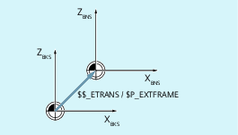

Die Externen Nullpunktverschiebung ist eine lineare Verschiebung zwischen Basiskoordinatensystem (BKS) und Basisnullpunktsystem (BNS).
Die Externen Nullpunktverschiebung mittels $AA_ETRANS wirkt, abhängig von der Maschinendaten-Parametrierung, auf zwei Arten:
Die Systemvariablen $AA_ETRANS wirkt nach Aktivierung durch das NC/PLC-Nahtstellensignal direkt als Verschiebungswert
Der Wert der Systemvariablen $AA_ETRANS wird nach Aktivierung durch das NC/PLC-Nahtstellensignal in die aktiven Systemframes $P:EXTFRAME und den Datenhaltungsframe $P_EXTFR übernommen. Anschließend wird der aktive Gesamtframe $P_ACTFRAME neu berechnet.
Im Zusammenhang mit der Systemvariablen $AA_ETRANS sind zwei Vorgehensweisen zu unterscheiden, die über das folgende Maschinendatum ausgewählt werden:
MD28082 $MC_MM_SYSTEM_FRAME_MASK,Bit1 = <Wert>
<Wert> | Bedeutung |
|---|---|
0 | Funktion: Direktes Schreiben von $AA_ETRANS[<Achse>] durch PLC, HMI oder NC-Programm. Freigabe zum Herausfahren der Nullpunktverschiebung von $AA_ETRANS[<Achse>] im nächstmöglichen Verfahrsatz: |
1 | Funktion: Aktivierung des aktiven Systemframes $P:EXTFRAME und des Datenhaltungsframes $P_EXTFR Freigabe zum Herausfahren der Nullpunktverschiebung von $AA_ETRANS[<Achse>] durch:
|
Syntax
$AA_ETRANS[<Achse>] = <Wert>
Bedeutung
| Systemvariable zum Zwischenspeichern der externen Nullpunktverschiebung |
| Kanalachse |
| Verschiebungswert |
<Axis>.basic.out.acceptExternalWorkOffset = 0 → 1 ⇒ $P_EXTFRAME[<Achse>] = $P_EXTFR[<Achse>] = $AA_ETRANS[<Achse>]
Basic Program Plus | Basic Program | |
|---|---|---|
<Axis>.basic.out.acceptExternalWorkOffset | LBP_Axis*.A_ExtZO | DB31, … DBX3.0 |